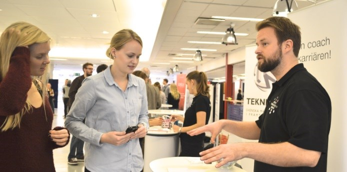

Studiebesök hos företag
Vill du veta mer om de företag du får chansen att besöka under BTD 2016? Mer information om dessa kommer snart, kolla här för uppdateringar om studiebesöksmålen.
Genvägen
Under Bioteknikdagarna hålls en arbetsmarknadsmässa, Genvägen, där studenter från de sex lärosätena (Chalmers tekniska högskola, Uppsala Universitet, KTH, Linköpings Universitet, Umeå Universitet och Lunds Universitet) kommer delta.
Varför ska ni delta på Genvägen?
Marknadsför er själva som arbetsgivare
Visa upp era produkter för framtida kunder
Marknadsför era tjänster/produkter om varför de är nyttiga för samhället och framtiden
Träffa möjliga framtida arbetstagare
Utlys kandidat- eller examensarbete
Hitta praktikanter eller sommarjobbare
Kunna påverka inriktning hos de studenter som ännu inte valt
Möjlighet att påverka kursval hos studenter
Inspirera vad man kan göra inom bioteknik/life science området
Inspirera och motivera studenterna för fortsatta studier
Nätverka med andra företag som deltar på mässan

På mässan har ni möjlighet att träffa studenter från hela Sverige som kommer vara i olika delar av sin utbildning, och kommer välja någon av följande inriktningar:
Umeå:
Medicinsk bioteknik
Bioinformatik
Växtbioteknik
Life science
Bioresursteknik
Uppsala:
Molekylär bioteknik
Bioinformatik
KTH:
Molekylär vetenskap och teknik
Medicinsk bioteknik
Industriell- och miljöbioteknik
Makromolekylära material
Linköping:
Protein Science and technology
Industriell bioteknik och produktion
Chalmers:
Biomedical engineering
Biotechnology
Complex adaptive system
Engineering mathematical and computional science
Entrepreneurship and Business Design
Material Chemistry and Nanotechnology
Innovative and Sustainable Chemical Engineering
Industrial Ecology
Lärande och ledarskap
Nanotechnology
Lund:
Molekylär bioteknik
Bioprocess
Livsmedel
Läkemedel
Om frågor eller anmälning kontakta:
Elin Haraldsson - projektledare@bioteknikdagarna.org
Sofia Bergklint - kassor@bioteknikdagarna.org
Julia Larsson - foretagsansvarig@bioteknikdagarna.org